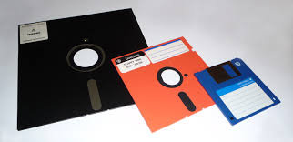
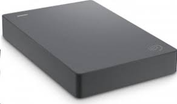
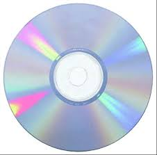
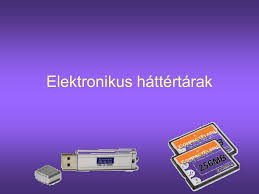

Az operatív memória a gép kikapcsolása után elvesznek a rajta tárolt adatok. Ennek megoldása, hogy olyan tároló elemre kell az adatot elmenteni, mely a gép kikapcsolt állapotában is megőrzi a tartalmát.
Jelenleg 3 féle elven működnek az ilyen tárolók:
Mágneses elvű háttértárak (winchester, floppy)
Elektronikus, vagy Flash memória (pen drive, memóriakártya
Optikai tárolók
Mágneses háttértárak:A mágneses tároló egységek alapelve a következő: mágnesezhető felületű forgó lemezre sugár irányban mozgatható író-olvasó fejegység veszi fel az adatot, illetve nyeri vissza. A gyakorlatban két ilyen alapelven működő háttértár terjedt el: a floppy egység, és a winchester.
Floppy egység:A floppy egységek lassan kezdenek teljesen kiszorulni, mert az elektronikus háttértárak hasonló költségek mellett sokkal többet tudnak. A floppy egységnél magát az adatot tároló lemezt ki tudjuk venni a lemezegységből. Programok, adatok cseréje, illetve adatok biztonsági mentésére használjuk. Manapság már csak egy fajta lemezegységgel találkozzunk, de régebben két lemezegység volt a forgalomba (5 ¼””, 3 ½”).
Winchester:A winchestereknél szintén forgó lemez, pontosabban lemezek felületére írják fel az adatot. Az egységnyi felületre sokkal több adat írható, azaz jóval nagyobb az adatsűrűsség. Az adatok elérési ideje is nagyságrenddel gyorsabb, mint a floppy egységé. Összefoglalva a winchester egy gyors, nagy kapacitású háttértár. A gépünkön rendszeresen használt programokat, illetve az azokkal létrehozott adatokat tároljuk rajta. Az első winchester az XT-ben jelent meg, amely csak 10 MB-os volt. Manapság már több száz GB-osok is vannak.
Optikai háttértárolók:A háttértárak egy másik elterjedt típusai a CD és DVD egység, melyek optikai elven működnek. Minden CD és DVD digitálisan, azaz számjegyek formájában tárolja az adatokat, még pedig kettes számrendszerben.
Elektronikus háttértárak: Az elektronikus háttértárak mindenféle mozgó alkatrész nélkül, elektronikus elven, flash memóriában tárolják az adatokat. Nagyon sokféle fajtája van forgalomba. Pen Drive:A legfontosabb az elektronikus háttértárak közül. Újabban a floppy lemezek helyett alkalmazzák az adatok mentésére és a gépek közötti átvitelre. Csatlakoztatása az úgynevezett USB portra történik, akár, úgyis ha megy közben a gép. Ez a forró csere. A Windows XP automatikusan felismeri.
Memóriakártyák:
A memóriakártyák is a flash memóriára dolgoznak, de általában a digitális fotózás területén alkalmazzák őket.
A legfontosabb típusai:
Smart Media
CompactFlash
Memory Stick
SD
MultiMedia Card
XD Card
Amennyiben a számítógépünk USB portjához csatlakoztatjuk a digitális fényképezőgépünket, akkor a fényképezőgépben lévő kártyáról áttölthetjük a számítógépre a képeket.